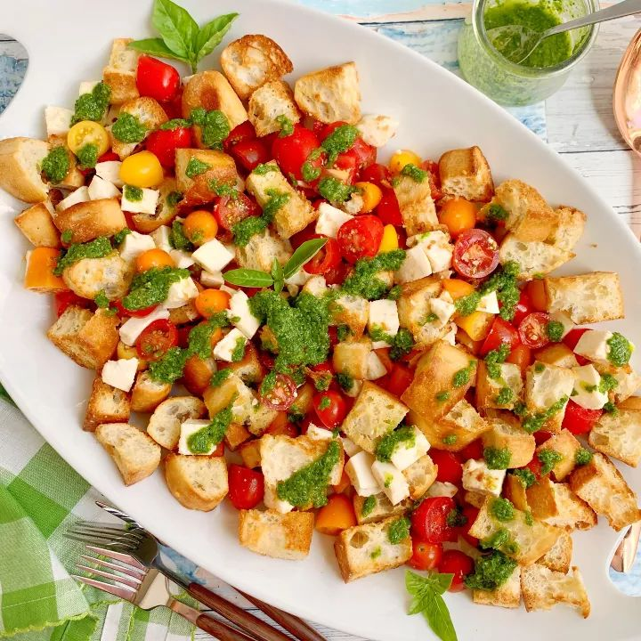

Light, refreshing, and bursting with authentic Italian flavors! Crispy artisan sourdough croutons tossed with sweet vine cherry tomatoes, creamy fresh mozzarella pearls, torn basil, and aged balsamic.

Preheat oven to 180°C (350°F). Toss rustic bread cubes with olive oil, sea salt, and oregano. Bake for 10–12 minutes until crunchy and golden.
Halve ripe cherry tomatoes, thinly slice red onions, drain fresh mozzarella pearls, and gently tear fresh sweet basil leaves.
Whisk extra-virgin olive oil, aged balsamic glaze, minced garlic, Dijon mustard, salt, and black pepper in a small bowl until thick and glossy.
Combine toasted bread, tomatoes, mozzarella, and basil. Pour dressing over salad and let rest for 5 minutes so the bread absorbs the juices without losing crunch.